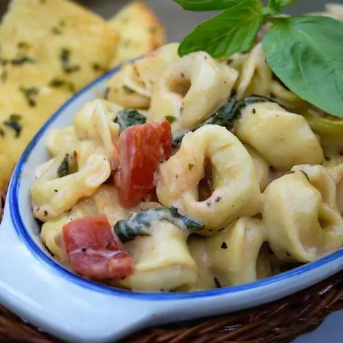

Spinach and Tomato Tortellini
- Total time25 mins
- Serves8
- Ingredients11
- Steps4

Ingredients
- 1 (16 ounce) package cheese tortellini
- 1 (14.5 ounce) can diced tomatoes with garlic and onion
- 1 cup chopped fresh spinach
- 1 ½ teaspoons dried basil
- 1 teaspoon minced garlic
- ½ teaspoon salt
- ¼ teaspoon pepper
- ¾ cup milk
- ¾ cup heavy cream
- 2 tablespoons all-purpose flour
- ¼ cup grated Parmesan cheese
Directions
- Fill a large pot with lightly salted water and bring to a rolling boil. Add tortellini and cook until tender, about 10 minutes.
- Meanwhile, combine tomatoes, spinach, basil, garlic, salt, and pepper in a large saucepan over medium heat. Cook and stir until the mixture begins to bubble.
- Whisk milk, cream, and flour together in a medium bowl. Add to the saucepan along with Parmesan; stir together. Cook until sauce is heated through, 3 to 5 minutes. Reduce the heat to low and simmer until thick, about 2 minutes.
- Drain tortellini, but do not rinse. Gently add to the saucepan and stir to coat with sauce.
Recipe credit: allrecipes.com